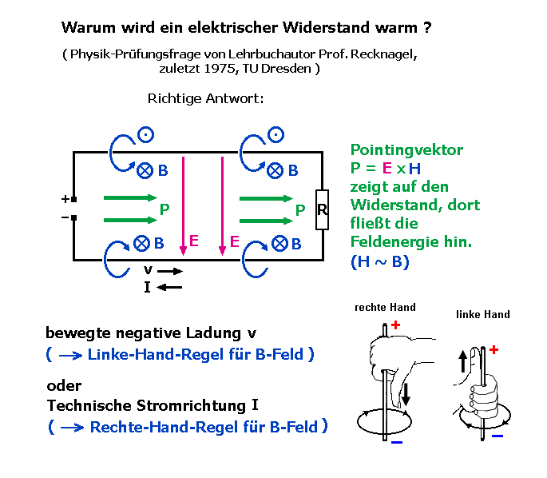
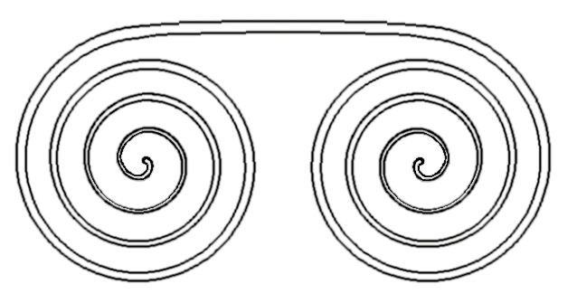
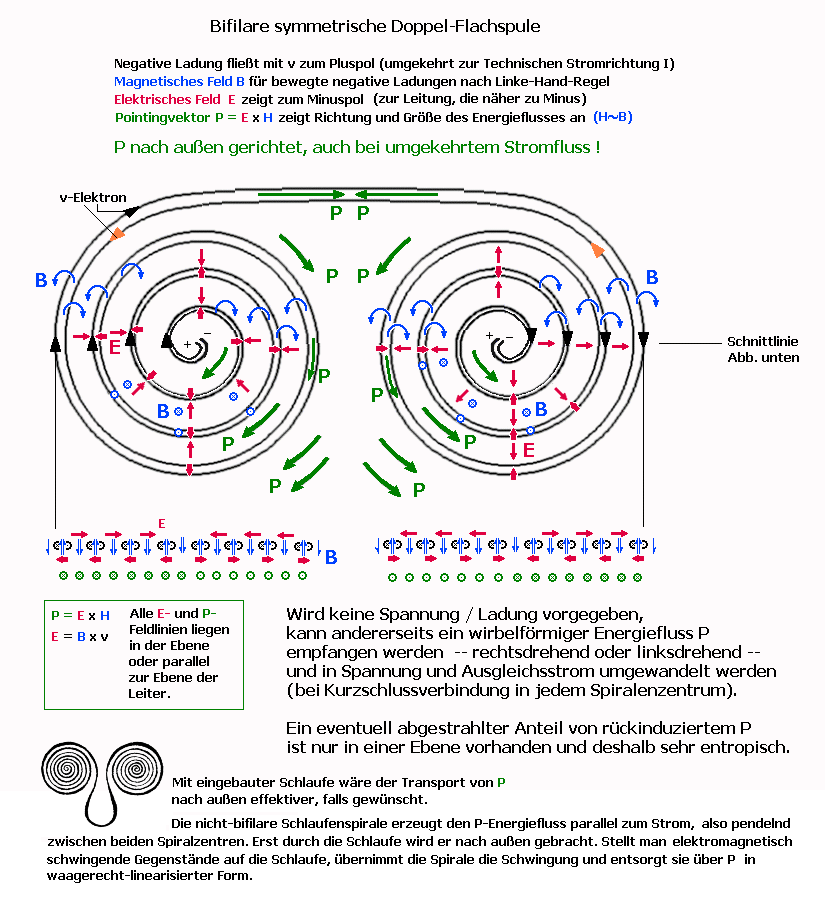

Spiralspulen
Um
das Verhalten von passiven Spiralspulen zu erklären,
hier erst einmal
etwas zur Bedeutung des Poitingvektors:

Die
magnetischen Feldlinien des Erdmagnetfeldes treten im Wesentlichen auf der Südhalbkugel
aus der Erde aus und durch die Nordhalbkugel wieder in die Erde ein, außerhalb
des Äquators mit einem Winkel zur Erdoberfläche, der in Europa etwa
60 Grad beträgt. Das elektrostatische Erdfeld zeigt von oben nach unten (immer
von Plus nach Minus), also auch vertikal. Die parallelen Komponenten zwischen
E und B ergeben keinen Beitrag zum Kreuzprodukt, aber die horizontale B-Komponente
nach Nord und die volle E-Feld-Komponente nach unten. Es ergibt sich ein Pointingvektor
P = E x H von 3,2 kW/m^2 nach Ost. Er steht möglicherweise im Zusammenhang
mit dem rotierenden Hätherfluss (hierarchisch aufgebauter Äther), der
die Erde von West nach Ost (primär) umströmt und die Tagesdrehung der
Erde unterstützt (Mitnahmeeffekt) bzw. stabilisiert. Über die Wirkung
solcher kosmischer feinstofflicher Flüsse, die über Sensoren (noch)
nicht erfassbar sind, kann leider nur spekuliert werden. Der Poitingvektor (als
Trägerströmung von Information) aber fußt auf bekannten Tatsachen.
Berechnung
von P für Erdoberfläche in Europa:
Bei
wolkenlosem Himmel beträgt E im Durchschnitt 200 V/m, bei Gewitter sogar
bis 35 kV/m.
In
Mitteleuropa beträgt die horizontale B-Feldkomponente ca. 20 µT (die vertikale
beträgt ca. 44 µT).
1T = Vs/m^2
H = B/myo mit my0 = 1,257E-6
Vs/Am
P = 200 V/m
* 20 E-6 Vs/m^2 / (1,257 E-6 Vs/Am) = 4000/1,257 V A / m^2 = 3,182 kW/m^2
.
Aktueller
Bezug: Die flache bifilare symmetrische Doppelspirale,
wie sie u.a. in den
BioProtect-Produkten Verwendung findet:

Größe
der Spirale in der BP-Card ca. 6 cm mal 3 cm = 18 cm^2 = 18 E-4 m^2 = 0.0018 m^2
-->
aufnehmbare Leistung aus Erdfeld = 3182 W * 0.0018 = 5,728 W
BP400: 4-Fache
Größe, 16-fache Fläche, 16-fache Leistung allein aus der Spirale
--> 92 W
(in ihr sind noch andere Strukturen drin)
Trennt
man die bifilare Verbindung in den Spiralzentren, und stellt sich jeweils angeschlossenen
Kondensatoren vor, dann wäre durch Aufladen der Kondensatoren das Starten
eines Schwingvorganges denkbar, denn es wird jeweils Minus mit Plus verbunden.
Die paarweise Gegenwicklung (genannt bifilar) beinhaltet auch bereits einen Kondensator-Effekt,
abhängig von der Stärke des Dielektrikums (Epsilon relativ) dazwischen,
so dass durch passende Materialgrößen auf die Zusatz-Kondensatoren
verzichtet werden kann.
Das erzeugte Magnetfeld scheint in der Summe Null
zu sein, wie bei bifilarer Wicklung zu erwarten. Es hängt jedoch sehr von
den Frequenzen (Baugrößen und Materialien) ab, ob sich magnetische
Miniwirbel zwischen den Leitern ausbilden können und induktive Energie speichern,
siehe nächste Zeichnung und B-Felder im Querschnitt.

zur
Seite SchlaufenspiraleEbenso
dürften sich passende Miniwirbel (B und E) empfangen lassen, die bei Vorhandensein
von beweglichen negativen Ladungsträgern sowohl Spannung als auch Strom induzieren.
Eine
bevorzugte Fließrichtung für negative Ladungsträger im nach unten
gerichteten Erdmagnetfeld ist die Spirale mit Rechtsablenkung (im Uhrzeigersinn
von oben gesehen), siehe Zeichnung Pfeile schwarz. Am Ende dieser Spirale sollte
sich spontan ein negativer Ladungsüberschuss ausbilden (oder ein Überschwingen
in diese Richtung), weil das Weiterfließen in Gegendrehung (geschlossenes
Zentrum) mit höherem Widerstand erfolgt.
Auch
die Spannungserzeugung in der Hall-Platte funktioniert über die Rechtsablenkung
negativer Ladungen im nach unten gerichteten Magnetfeld.
Die
Flachspirale könnte ebenso als Sensor fungieren, nur legt sie durch ihre
Spiralkrümmung die mögliche Rechtsablenkung von vornherein fest. Bei
zu kleinen oder zu großen Magnetfeldern stimmt die Bahnkrümmung nicht,
und der elektrische Widerstand steigt. Das optimale Fenster ist sehr schmal.
In
Biogewebe findet man ebensolche festgelegte 'Wicklungen' um Nerven herum, deren
Radien in Längsrichtung der Nerven ebenfalls variieren (Schnürringe).
Die Gesamtstruktur ähnelt einer Würstchenkette (im Querschnitt Flachspiralen)
und legt transversale und longiudinale Transportfrequenzen durch die Baugrößen
exakt fest.
Im
optimalen Schwingfall per Antennenempfang müsste das äußere vertikale
B-Feld in jeder Halbwelle seine Richtung ändern. Da im bifilaren Spiralenaufbau
auch vertikale Gegenmagnetfelder benachbart sind, kann auch eine Bewegung oder
Vibration für Schwingungsaufnahme sorgen. Umgekehrt kann Energie über
Vibration abgeführt werden, ein Vorgang, der in körpereigenen organischen
Spiralen Signale vortäuscht.
Die
schädliche Wirkung von E-Smog muss auch über die Störbarkeit körpereigener
Festfrequenzen definiert werden. Das hat mit Grenzwerten wie W/m^2 oder W/kg nichts
zu tun. Leistung allein legt noch kein Wellenstrukturmuster oder seine Absolutgröße
fest. Eine größere oder kleinere Strahlungsleistung erzeugt in der
Regel andere Wirbelformen, die möglicherweise keine Resonanz zum Biogewebe
aufbauen, während es eine konkrete Zwischengröße tut. Es gibt
jedoch eine Vielzahl von möglichen Resonanzen, wegen unterschiedlichem Organaufbau,
Unterschiede in den Arten und Altersgruppen und individuelle Unterschiede.
Zu
Skalarwellen
zurück
zu Gutachten